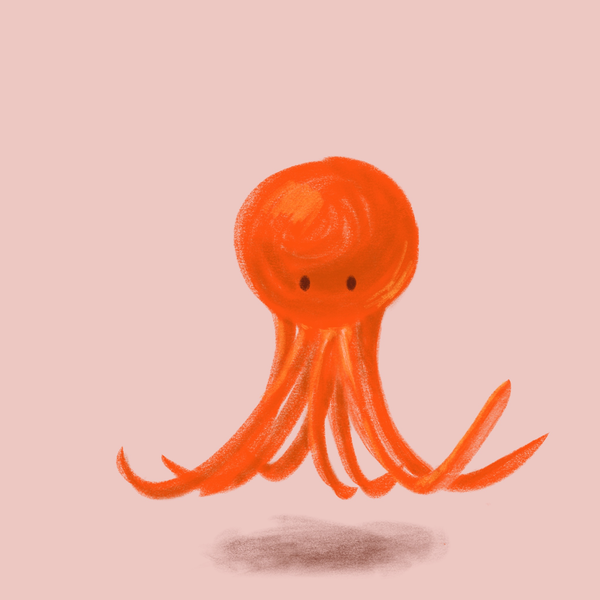

个人主页
个人主页 V1
用 Vibe Coding 方法从 0 到 1 做的个人主页，含数字分身聊天区。
一个对技术与艺术同样好奇的学生。白天在智能医学工程里穿梭，晚上用 Vibe Coding 把零散的想法拼成看得见的小东西。
页面结构与样式基础
版本控制与协作流程
用自然语言驱动 AI 开发
专业背景知识
// 拖拽旋转章鱼 · 点击图片查看兴趣

// 问我关于吴润的任何事，我替她回答
欢迎交流
你的反馈不会公开，只有我能看到。
可以说说：哪里看不懂、哪里不好找，或哪里让你眼前一亮。